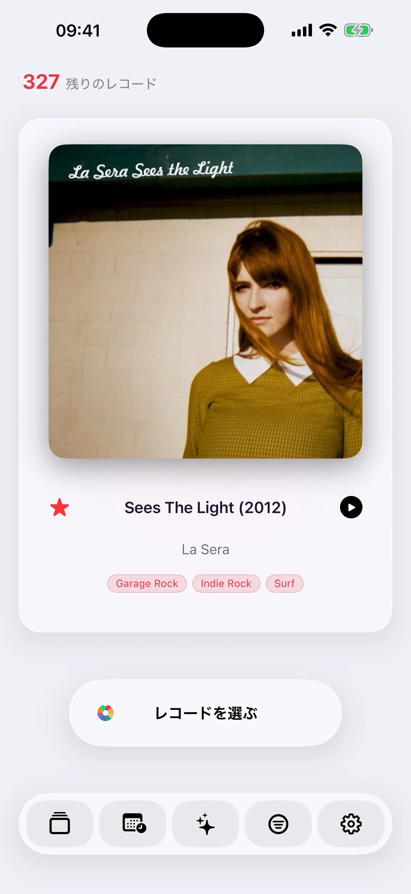

Record Picker
Record Picker には、カスタマイズできるランダム選択、Mood Pick、充実したカタログ作成、iCloud、エクスポート、重複管理、32 言語、iPhone、iPad、Apple Watch、Mac 用のネイティブ アプリがまとめられています。


きちんと整ったコレクション
公開データベースだけでは足りない場合でも、整った確認しやすいコレクションを作れます。
- バーコードスキャンはMusicBrainzが参照を知らない場合にDiscogsへフォールバックし、Discogsが版を見つけるとフォームを自動入力します。
- MusicBrainzとDiscogsのメタデータ
- クレートとは別のウィッシュリスト
- 重複検出とデータ品質チェック

アートワークと視覚データ
取得したり自分で選んだアートワークで、眺めやすいコレクションを保てます。
- Cover Art Archive · iTunes Search · Deezerでアートワーク検索
- 写真またはファイルから手動インポート
- アートワークがない場合のWeb検索
- 元のアートワークを復元
- アートワークと視覚データの編集

iPhone横向きセレクター
iPhoneを横向きにすると、カバー、メタデータ、操作を同時に見ながら選べます。
- 左にカバー、右に詳細情報
- タイトル、アーティスト、ジャンルタグ、フォーマット、レーベル、追加年を表示
- メタデータの横に中央配置されたPickボタン
- カバーと画面端の間でバランスよく浮く下部ツールバー
- 横向きでは統計が3列に再配置

カスタマイズできるランダム選択
コントロールを保ちながら次のレコードを選び、ランダム性でコレクションを動かし続けます。
- 再生回数の少ないレコードを優先する重み付き抽選
- 年、ジャンル、形式、回転数、お気に入りでフィルター
- 削除せず一時的に除外
- カバーを左へスワイプして新しいレコードを抽選
- 右へスワイプして前回の抽選を取り消し。iPadでも対応
- 何が繰り返し戻ってくるかを確認できる履歴
ムードと再生
気分で選び、再生履歴を残すことで、時間とともにコレクションの新しい面を見つけられます。
- 利用可能な場合はAppleのローカルモデルでムード選択
- モデルが使えない場合はメタデータでローカル照合
- 利用可能な場合はオンデバイスのApple Intelligenceによる文章型統計
- 選ばれた/再生したレコードの最近の履歴
- 利用可能な場合はApple Music、Spotify、Deezer、YouTube Music、Amazon Music、SoundCloud、Qobuz、Tidalで再生
Apple Watchを再設計
カバーアートをぼかした背景にし、お気に入り、前回の抽選取り消し、次の抽選の各ボタンに専用の触覚フィードバックを用意しました。
- 41 mmからUltraまで対応するレイアウト
- 細かな調整: iPadのカバー選択をより整え、iPhone-Watch同期を高速化し、App Storeレビュー依頼を控えめにしました。
閲覧とコレクション分析
iPhoneとiPadそれぞれの画面で、アプリ内からコレクションを閲覧、確認、把握できます。
- クレートをすばやく移動
- iPhoneの各行とiPadの各タイルに小さな赤い星を表示し、お気に入りを切り替え
- 統一されたLiquid Glassボタン
- 読みやすいiPad行とカバーから詳細への直接アクセス
- 本当に役立つ場面でのiPadドラッグ＆ドロップ
- 重複検出とデータ品質チェック
- 年、追加日、重複、レーベル、アートワーク、ジャンル、フォーマット、トラックの不足を確認
- MusicBrainz、続いてDiscogsによるジャンル、スタイル、トラック補完
- ウィッシュリストとAI Mood履歴でスワイプ削除
手間のないiCloud同期
データはiCloudでデバイス間を同期し、サードパーティAIプロバイダーやクラウドAIは使いません。
- クレート、ウィッシュリスト、解決済み重複、除外、履歴、復元可能な削除、カスタムカバーが端末間で同期されます。
- アートワークと視覚データの編集
- スプレッドシート用CSVと整ったJSONを、クレートとウィッシュリスト別に出力
- 必要なときに完全バックアップ
- サードパーティAIもクラウドAIも使わず、Apple Intelligenceは端末上に留まります
- インターネット上のレビューを自動収集することはありません
32言語
Record Pickerは32言語に対応し、アラビア語、カタロニア語、韓国語、デンマーク語、オーストラリア/カナダ/英国英語、フィンランド語、カナダフランス語、ヘブライ語、ヒンディー語、インドネシア語、ノルウェー語、ポーランド語、ポルトガル語、ロシア語、スウェーデン語、トルコ語が加わりました。
- アラビア語、ヘブライ語、ヒンディー語、日本語、韓国語、簡体字中国語、繁体字中国語
バージョン
v2.3.2コレクション全体を持ち運べます。
配信中 · Mac · 近日公開 · iPhone · iPad · Apple Watch
- 新しいポータブルな .recordpicker ファイルに、コレクション、ウィッシュリスト、お気に入り、カスタムアートワーク、選択履歴をまとめます。
- iPhone、iPad、Mac で書き出し、読み込み、検証が可能。JSON と CSV も引き続き利用できます。
- iCloud に依存しない設計で、将来の Android／Windows との転送にも備えます。
v2.3Apple Watch のRecord Pickerで別の音楽アルバムを選択します。
iPhone · iPad · Mac · Apple Watch · 配信中
- 音楽アルバムを選ぶ · Random Pick · お気に入り
- めったに聞かない音楽アルバム · 最近追加された · クラシック · 静かな夜 · 元気いっぱい
- オフライン · 同期を保留中 · 同期中 · 最新
- Apple Watchでプレイする · 再生が開始されました · 聞いた
- Today's Pick は、信頼できる音楽ニュースをあなたが所有する音楽アルバムにリンクし、それが今日重要である理由を説明します。
v2.2Record Picker 2.2 では、コレクションの読み込み、整理、再発見がさらに正確になりました。
- CSV読み込みでコレクションとウィッシュリストを明確に分け、列の割り当てと詳しい結果表示に対応しました。
- アーティスト、ジャンル、レーベルの候補と優先する物理フォーマットにより、自分のメタデータを上書きせず素早く入力できます。
- ジャンル順と複数ジャンルの絞り込みで探しやすくなり、Random Pick と Mood Pick の精度も向上します。
- 今日の一枚 では、より確かな情報源、鮮度、根拠を表示し、「関連あり／なし」の評価を次の提案に反映します。
- 信頼性、アクセシビリティ、翻訳を改善し、iPhone、iPad、Macの大規模コレクションも快適かつ非公開に保ちます。
Record Picker 2.3Record Picker は、使い始めをよりスムーズにし、毎日の操作をさらに安定させます。
- 不完全な書き出しや複数行の項目を含む Discogs CSV も、より確実に読み込めます。
- Random Pick、Mood Pick、今日の一枚、バックアップ、設定に、控えめでリセット可能なガイドを追加しました。
- 対応デバイスでは Apple Intelligence が統計分析を端末上で非公開に生成できます。ローカル分析へ切り替わる場合は理由を表示します。
- Mood Pick と 今日の一枚 のジャケット表示を高速化し、iPhone、iPad、Mac のレイアウトを改善しました。
- バックアップ、復元、データ消去の安全性を高め、翻訳と操作性も多数修正しました。
コレクションは常に非公開で、あなたが管理できます。
v1.9Record Picker 1.9に「今日の一枚」が登場。すでに所有している一枚を、その日にふさわしい理由とともにプライベートに再発見できます。
- 確認済みの音楽ニュース、重要な記念日、任意の近隣コンサート情報を、端末内だけでコレクションと照合します。
- すべての提案に選定理由と日付付きの情報源を表示。ウィッシュリストのニュースは、再生できる所有盤とは分けて扱います。
- 任意の非公開リマインダー、関連性のフィードバック、Apple Watchの「今日の一枚」で提案の質を保ちます。コレクションがニュースサービスに送信されることはありません。
Record Picker ≤ 1.8
v1.8Record Picker 1.8では、iPhone、iPad、Apple Watch、Macのバージョンを統一しました。
- レコード、CD、SACD、ハイブリッドSACD、MiniDisc、カセット、DVD-Audio、Blu-ray Audio、78回転盤に対応。
- 作品、作品番号、指揮者、オーケストラ、アンサンブル、独奏者、録音日、録音場所などクラシック専用項目を追加。
- 中立的な「Media Format」列でCSVの読み込みと書き出しを明確化し、旧ファイルとの互換性も維持。
- バックアップ、お気に入り、アートワーク、インポート、メタデータ修正の信頼性を向上。
- アプリが安全に行える修正と、ユーザーの判断が必要な選択を分け、各提案の情報源と信頼度を表示します。
- MusicBrainzとDiscogsの相違点を並べて比較できます。修復キューは再開でき、CSVレポートと取り消しにも対応します。
- 新しい4ステップガイドで、読み込み、データ品質、Random Pick、Mood Pick、Free/Proを紹介します。
- レコード詳細ではオリジナルの発売年を先に表示し、所有する版の正確な年も保持します。
v1.6Record Picker は無料になり、生涯 Pro とネイティブ Mac アプリが付属します
- Record Picker は、最大 100 レコードのコレクションに対して無料になりました。 Pro を 1 回購入すると、サブスクリプションなしで iPhone、iPad、Mac で無制限のコレクションのロックが解除されます。
- 新しいネイティブ Mac アプリは、大画面をコレクションの閲覧、充実、クリーンアップ、再発見のためのコマンド センターに変えます。
- iCloud 同期の応答性が向上し、そのステータスが専用の同期センターに表示されるようになりました。
- CSV インポートにより、既存のお気に入りが保護されるようになりました。現在のコレクションを置き換えずに、以前のバックアップからのみお気に入りを復元することもできます。
- 重複の検出が大幅に高速化され、レビューの選択が改善され、レビュー キーワードの再インデックス化で明確な進捗が表示されるようになりました。
- ストレージ診断をクリアすると、エラーをデータ損失のように見せるのではなく、問題が報告されます。
- iPhone、iPad、Apple Watch 間での iCloud 同期の信頼性が向上しました。
- アートワークは手動またはバーコード入力後に自動的に追加され、より堅牢なフォールバックが行われるようになりました。
- データ品質ツール、重複管理、批判レビューの取得が改善されました。
v1.4iPhone横向き表示、カバーのスワイプ、より速いお気に入り
- iPhone横向き抽選
- 何が繰り返し戻ってくるかを確認できる履歴
- クレートとは別のウィッシュリスト
- 統計
- 細かな調整: iPadのカバー選択をより整え、iPhone-Watch同期を高速化し、App Storeレビュー依頼を控えめにしました。
v1.3Apple Watch再設計、Discogsフォールバック、32言語
- カバーアートをぼかした背景にし、お気に入り、前回の抽選取り消し、次の抽選の各ボタンに専用の触覚フィードバックを用意しました。
- 41 mmからUltraまで対応するレイアウト
- バーコードスキャンはMusicBrainzが参照を知らない場合にDiscogsへフォールバックし、Discogsが版を見つけるとフォームを自動入力します。
- Record Pickerは32言語に対応し、アラビア語、カタロニア語、韓国語、デンマーク語、オーストラリア/カナダ/英国英語、フィンランド語、カナダフランス語、ヘブライ語、ヒンディー語、インドネシア語、ノルウェー語、ポーランド語、ポルトガル語、ロシア語、スウェーデン語、トルコ語が加わりました。
- 細かな調整: iPadのカバー選択をより整え、iPhone-Watch同期を高速化し、App Storeレビュー依頼を控えめにしました。
v1.2カタログ、スマート選択、Apple Watchコンパニオン
- インポート、手動入力、バーコードスキャンに対応した完全な音楽カタログ。
- アニメーション抽選、年フィルター、お気に入り、一時除外、再生履歴、統計。
- 利用可能ならAppleのローカルモデルでムード選択し、なければメタデータから端末内で照合します。
- MusicBrainz検索、Cover Art Archiveまたは手動アートワーク、バックアップ/復元、Siriショートカット、Apple Watch。
- コレクションはローカル保存のまま、メタデータやアートワーク検索はユーザーが開始したときだけ行われます。
- よりスムーズな体験のため、インターフェイスと内部基盤を改善。
- iPadサポートを改善。
- 批評レビューをより活用したムード選択。
- データ品質: レコード詳細、行の手動削除、Discogs/MusicBrainz検索。
- 不足曲: MusicBrainz検索後にDiscogs検索。